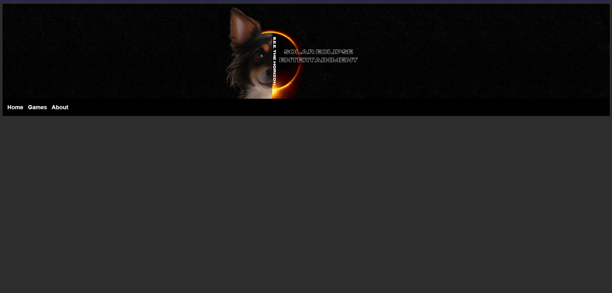

Welcome!
My name is Tae, I use they/them pronouns, and this is my portfolio website. I have many pages for you to not only get to know me professionally, but personally as well. If you have any questions, comments, concerns, or threats I encourage you to contact me! You can do so either via email or through my contact page. If you would like to support my projects you can head over to the support page where you can buy me a coffee or buy the kiddos a treat!
Below you will find a list of my projects and links leading to more information about them. On the About page you will find the skills I have to offer, my family, and my passions. If you would like to see the certificates I have earned, you will find them on the Certificates page.
Thank you for taking the time to get to know me, I look forward to the chance to get to know you. Have a good day!
Projects
Kiddo Website Solar Eclipse Entertainment Website 